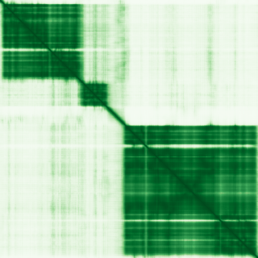
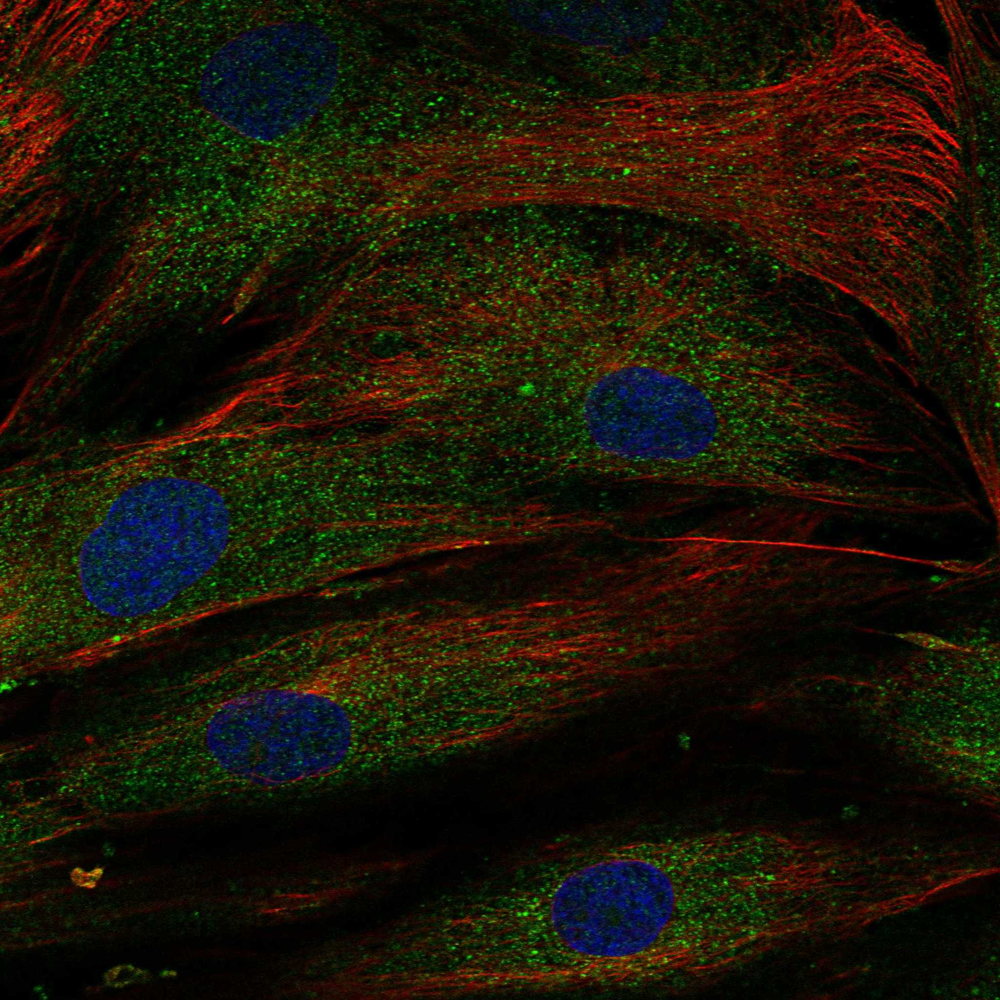
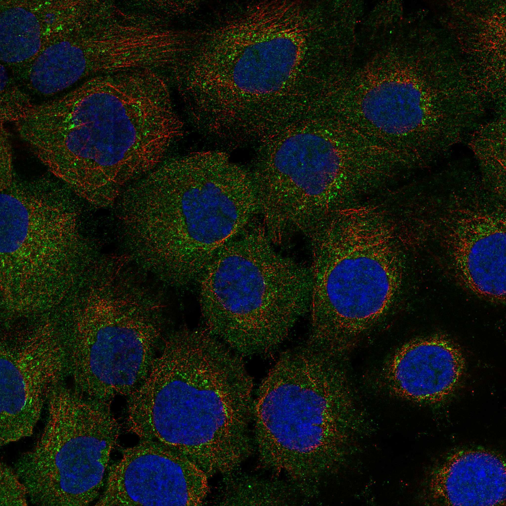

type: protein-evaluation gene: "G2E3" date: 2026-06-02 tags: [protein-scout, nucleolus, evaluation] status: scored ---
G2E3 核蛋白评估报告
1. 基本信息
| 项目 | 内容 |
|---|---|
| 基因名 / 别名 | G2E3 / KIAA1333 |
| 蛋白全名 | G2/M phase-specific E3 ubiquitin-protein ligase |
| 蛋白大小 | 706 aa / 80.5 kDa |
| UniProt ID | Q7L622 |
2. 评分总览
| 维度 | 得分 | 权重 | 加权后 | 关键证据摘要 |
|---|---|---|---|---|
| 核定位特异性 | 5/10 | ×4 | 20.0 | UniProt: Nucleolus (ECO:0000269) + Cytoplasm; GO-CC: nucleolus (IEA), nucleus (IBA); HPA "Approved": Cytosol (main) + Golgi/Vesicles (NOT nucleolus) |
| 蛋白大小 | 3/10 | ×1 | 3.0 | 706 aa, 80.5 kDa, 大型蛋白 |
| 研究新颖性 | 8/10 | ×5 | 40.0 | PubMed strict=22, ≤40 |
| 三维结构 | 6/10 | ×3 | 18.0 | AlphaFold mean pLDDT 85.6; 无 PDB |

| 调控结构域 | 7/10 | ×2 | 14.0 | HECT domain (PF00632) + RING-like domain + 多个 IPR — E3 ubiquitin ligase, 重要调控功能 |
| PPI 网络 | 4/10 | ×3 | 12.0 | WDR6 (exp 0.626), HTT/ATN1/KLK6 (Y2H); 网络强度中等偏低 |
| 加权总分 | 107/180** | |||
| 互证加分 | +0.0 | |||
| 归一化总分 (÷1.83) | 58.5/100** |
3. 详细分析
3.1 核定位证据
| 来源 | 定位 | 可信度 |
|---|---|---|
| UniProt | Nucleus, nucleolus (ECO:0000269); Cytoplasm (ECO:0000269) | 中（有实验证据但单一文献） |
| GO-CC | nucleolus (IEA:UniProtKB-SubCell), nucleus (IBA:GO_Central), cytosol (IDA:HPA), Golgi apparatus (IDA:HPA) | 中（nucleolus 为 IEA 电子注释） |
| Protein Atlas (IF) | HPA "Approved": Cytosol (main) + Golgi apparatus + Vesicles. NO nucleolus/nucleus annotation | 矛盾（HPA 不支持核仁定位） |
HPA IF 状态: IF images available (HPA reliability "Approved") — HPA 定位为 Cytosol (main localization) + Golgi apparatus + Vesicles。IF 图像存在于 proteinatlas.org，但未检测到 nucleolus 或 nucleus 信号。
结论: G2E3 核仁定位存在 UniProt vs HPA 矛盾。UniProt 标注 Nucleolus (ECO:0000269)，但 GO-CC 仅有 IEA 电子注释。HPA IF 明确检测到 Cytosol/Golgi/Vesicles 而未见 nucleolus/nucleus。关键文献 PMID:17239372 标题为 "G2E3 is a nucleo-cytoplasmic shuttling protein with DNA damage responsive localization"，支持核质穿梭但可能依赖于特定条件（DNA 损伤响应）。HPA 检测可能未覆盖 DNA 损伤条件。核定位评分中等（5/10），鉴于 HPA 不支持核仁定位且 GO-CC nucleolus 证据仅为 IEA。
3.2 结构与数据源
| 指标 | 数值 |
|---|---|
| AlphaFold | AF-Q7L622-F1 |
| 平均 pLDDT | 85.6 |
| pLDDT >90 | 66.4% |
| pLDDT 70-90 | 20.4% |
| PDB | 无 |
| InterPro | IPR034732 (HECT), IPR000569 (HECT), IPR035983 (HECT-like), IPR051188 (G2E3), IPR059102, IPR042013, IPR019786 (Zinc finger), IPR011011 (Zinc finger FYVE/PHD), IPR001965 (Zinc finger PHD-type), IPR013083 (Zinc finger RING/FYVE/PHD) |
| Pfam | PF00632 (HECT), PF26054, PF13771 (zf-C2H2_6) |
AlphaFold PAE 状态: PAE 已下载，模型置信度良好（mean pLDDT 85.6, >90 占 66.4%）。HECT E3 ligase 结构域折叠预测可靠。无 PDB 实验结构。
3.3 研究现状
| 指标 | 数值 |
|---|---|
| PubMed strict (Title/Abstract) | 22 |
| PubMed broad | 31 |
| 别名 | KIAA1333（未用于 scoring） |
关键文献：G2E3 文献量低（strict=22）。核心文献包括：G2E3 作为核质穿梭蛋白响应 DNA 损伤定位（PMID:17239372, 核心定位文献）、G2E3 为双功能泛素连接酶对早期胚胎发育至关重要（PMID:18511420）、G2e3 敲除小鼠肥胖表型（PMID:32801815）、G2E3 在舌鳎中的鉴定与功能分析（PMID:39272364）。lncRNA G2E3-AS1 在转移性结直肠癌中的预后意义（PMID:39745049）。功能聚焦于胚胎发育和 DNA 损伤响应，E3 泛素连接酶活性为核心。
3.4 PPI 网络（三源综合）
| Partner | Source | Score/Evidence | Relevance |
|---|---|---|---|
| SCFD1 | STRING | 0.846 (textmining 0.505) | Vesicle transport |
| GAS2L3 | STRING | 0.660 (textmining 0.610) | G2/M-specific |
| WDR6 | STRING + IntAct | 0.626 (exp 0.626; two hybrid) | WD repeat |
| KIF20B | STRING | 0.614 (textmining 0.471) | Kinesin |
| DLGAP5 | STRING | 0.600 (textmining 0.464) | Mitotic spindle |
| CDCA2 | STRING | 0.580 (textmining 0.509) | Cell division |
| CKAP2 | STRING | 0.563 (textmining 0.476) | Cytoskeleton |
| HTT | IntAct | two hybrid array (PMID:32814053) | Huntington |
| ATN1 | IntAct | two hybrid array (PMID:32814053) | Atrophin-1 |
| SPECC1L | IntAct | co-IP (PMID:28514442) | Cytospin-A |
PPI 网络强度中等偏低。STRING 主要依赖 textmining 关联（SCFD1 最高 0.846 但 textmining 占 0.505），实验互作仅 WDR6 有一条 two hybrid (0.626)。IntAct 含 15 条互作，主要为高通量 Y2H（HTT, ATN1, KLK6, WFS1, SPRED1 等）和少量 co-IP（SPECC1L, EFHD1, Trpm7）。UniProt 记录互作以 3 experiments Y2H 为主。
UniProt 记录互作: ATN1 (3), HTT (6), KLK6 (3), NEFL (3), RPS15 (3), SPECC1L (2), SPRED1 (3), WFS1 (3)。
4. 总体评价
G2E3 是一个具有有趣功能特征但核定位存在矛盾的候选（58.5/100）。核心优势：低文献量（PM=22）、HECT 结构域 E3 泛素连接酶功能明确且调控重要（胚胎发育、DNA 损伤响应）、结构域注释丰富（多个 zinc finger + HECT）、AF 置信度良好。核心弱点：HPA IF 不支持核仁定位（检测到 Cytosol/Golgi，而非 nucleolus）、UniProt nucleolus 注释可能依赖单一/条件性文献、GO-CC nucleolus 仅为 IEA、PPI 以 textmining 为主。核定位需要条件性验证（DNA 损伤诱导核仁易位？）。
5. 数据来源
- UniProt: https://www.uniprot.org/uniprotkb/Q7L622
- AlphaFold: https://alphafold.ebi.ac.uk/entry/Q7L622
- PubMed: https://pubmed.ncbi.nlm.nih.gov/?term=G2E3
- Protein Atlas: https://www.proteinatlas.org/ENSG00000092140-G2E3（IF: Approved, Cytosol main）


HPA IF 图像已本地嵌入。
PAE 图像暂无数据（未生成本地图片或未可靠获取），结构判断基于AlphaFold pLDDT统计。